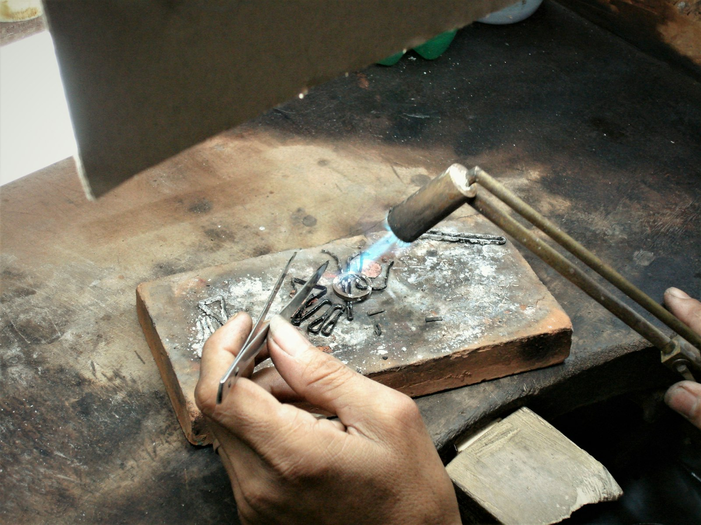
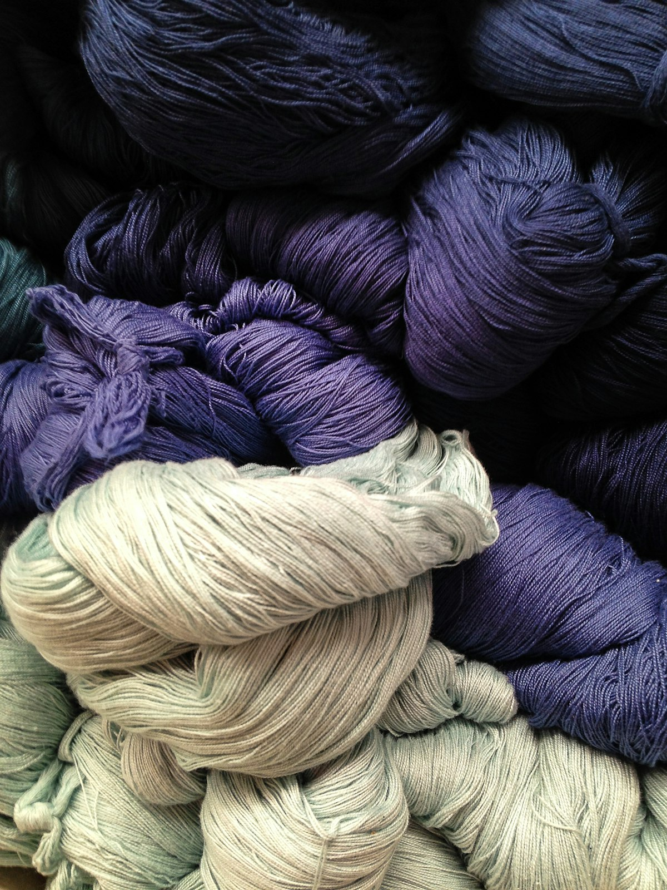

Veracruz
Le filigrane jarocho
Deux fils d'argent torsadés, aplatis, puis courbés à la pince en volutes minuscules et soudés dans un cadre. C'est la dentelle des boucles de carnaval. Une paire d'arracadas demande deux jours.
Les ateliers
Coyolli n'achète rien à un intermédiaire. Chaque matière vient d'un atelier que Mariana connaît, qu'elle visite deux fois par an, et dont le nom figure sur la fiche de chaque bijou. Trois de ces ateliers sont dans l'État de Veracruz, là où tout a commencé.
Le pays totonaque, entre les pyramides d'El Tajín et les champs de vanille. Doña Tere Xochihua et ses filles enfilent les graines de la région : colorín rouge, ojo de venado, lágrimas de San Pedro, et tressent la gousse de vanille en petites figures parfumées. Les frises en escalier d'El Tajín, les grecas, sont le motif du logo Coyolli.
Derrière les Portales, à deux rues de la maison d'enfance de Mariana, Don Chucho Lagunes tord le fil d'argent en filigrane depuis cinquante ans. C'est lui qui fait les boucles et les parures des Jarochas pour le carnaval : arracadas, rosettes, colliers de corail rouge. Le premier atelier partenaire, et le premier maître de Mariana.
Dans la sierra, à deux heures d'Orizaba, on parle encore nahuatl et on tisse au métier de ceinture. La famille Tehuacatl file la laine et le coton et les teint aux plantes : indigo pour le bleu, écorce de noyer pour le brun, pericón pour le jaune. Les cordons des colliers Coyolli sortent de leurs bains.
Capitale mondiale de l'argent depuis les années 1930. Dans le barrio de la Garita, l'atelier de Don Efraín Jaimes fond, lamine et martèle l'argent 925 à la main. Techniques : repoussé, ciselure, martelage. C'est ici que sont faits les fermoirs, les créoles et les pendentifs Coyolli.
Un village entier qui martèle le cuivre depuis le XVIe siècle, au son des maillets. Les frères Ramírez Pureco fabriquent les petits grelots de cuivre, les coyolli, qui signent chaque pièce. Chaque grelot est formé de deux demi-coques martelées, avec une bille de cuivre à l'intérieur.
Les mines de Simojovel produisent un ambre de vingt-cinq millions d'années, du miel clair au rouge profond. Lupita Gómez et son fils Ismael taillent et polissent chaque perle à la main. Coyolli n'utilise que de l'ambre brut acheté à la famille, jamais de résine reconstituée.
Rive gauche de la Garonne. C'est ici que tout se rejoint : montage, soudure, polissage, nouage des cordons, numérotation. Un seul établi, une seule paire de mains, celles de Mariana.
Les techniques

Deux fils d'argent torsadés, aplatis, puis courbés à la pince en volutes minuscules et soudés dans un cadre. C'est la dentelle des boucles de carnaval. Une paire d'arracadas demande deux jours.

Les graines sont séchées, percées à l'aiguille chauffée et polies à la cire. La gousse de vanille, encore souple, se tresse en fleurs et en petits scorpions, comme sur les marchés de Papantla depuis toujours.

L'indigo fermente une semaine avant de bleuir le fil à l'air libre. L'écorce de noyer donne le brun, le pericón le jaune. Rien de synthétique, et jamais deux bains identiques.

La feuille d'argent est travaillée à l'envers, au marteau et au ciselet, sur un lit de poix. Les éléments sont ensuite soudés à l'argent, puis polis à la pierre d'agate.

Deux demi-coques de cuivre battues sur l'enclume, une bille à l'intérieur, une fente en bas. Le son dépend de l'épaisseur du métal. Les frères Ramírez Pureco les accordent à l'oreille.

À Saint-Cyprien, chaque cordon est noué selon un nœud coulissant appris à Zongolica. Fermoirs en argent massif, anneaux soudés, grelot de signature et numéro gravé.
Un bijou Coyolli, c'est au moins quatre paires de mains. La mienne est la dernière.Mariana
Douze pièces de la collection en cours, avec l'origine de chaque matière.